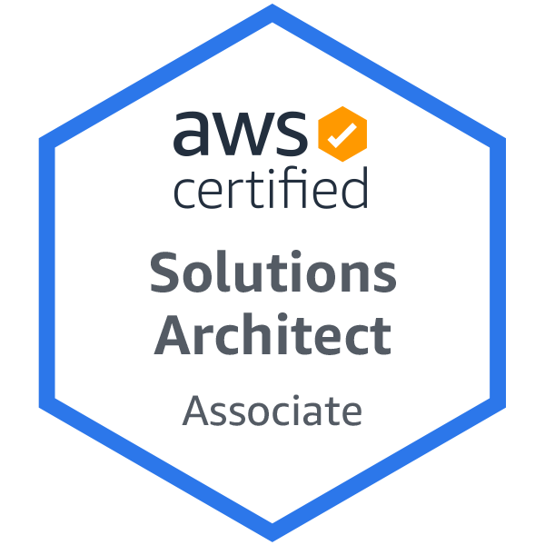
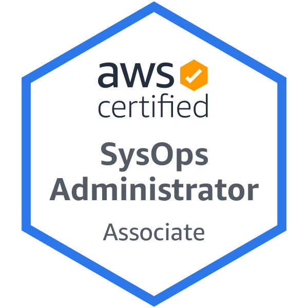

Ryan Wetzelberger
LinkedIn Profile
410-499-9828
ryanwetzelberger@gmail.com
PROFESSIONAL SUMMARY
Experienced DevOps Engineer focusing in DevOps tooling, networking, and security within a hybrid environment. Driven to simplify workflows and shorten feedback loops. Coordinates efforts across multiple teams to meet business needs
TECHNICAL SKILLS
- Amazon Web Services (AWS)
- Nornir / Terraform / Chef / Ansible
- Python / Ruby / Bash
- Kubernetes / Docker
- Linux RedHat / Ubuntu / Amazon Linux / OS X
- Nagios / ELK / Grafana
- Device42
- Git / Jira / Bitbucket / Confluence
- Juniper JunOS / Palo Alto Networks PANOS / Arista EOS
PROFESSIONAL EXPERIENCE
Amobee Inc, Baltimore MD (Aug 2018 - Present)
Senior DevOps Network Engineer
- Manage a global, hybrid cloud network spanning multiple co-locations, and VPC's in Google Cloud Platform and Amazon Web Services (AWS).
- Lead automation efforts for Network Operations through capturing requirements, implementing solutions, and collaborates with the DevOps team to improve workflows with DevOps tools.
- Migrate network tools and services to containers following an automation lifecycle from source to production.
- Continuously drive the consolidation of tooling utilizing the Nornir Python Library.
- Collaborate with DevOps Core team to integrate Kubernetes into Amobee's Network environment.
- Architect a network design for Amobee's AWS multi-account environment using Transit Gateways and shared resources.
- Designed and deployed ThousandEyes monitoring solution with Enterprise Agents to monitor public network paths used by production applications.
- Planned and deployed an enterprise-wide VPN solution in preparation for audits related to industry certifications.
- Drove integrations between Videology assets and Amobee assets, including connecting VPN technologies and networks together.
- Simplify ticket management workflows within Jira for Network Operations.
- Establish requirements for documentation through markdown files in git repositories and wiki pages in Confluence.
Technologies: AWS, Nornir, Python, Terraform, Docker, Kubernetes, Palo Alto Networks, ThousandEyes, Juniper, Arista, Atlassian, Grafana, GCP, Megaport
Videology Inc, Baltimore MD (Sept 2015 - Aug 2018)
Senior Site Reliability Engineer
- Expertly leveraged multiple configuration management tools. Utilized programming languages such as Python, Ruby, and Bash to integrate with various API's for infrastructure management.
- Designed and delivered Terraform automation framework to DevOps team.
- Managed an ELK implementation across many instances and AWS regions, centralizing system event logs.
- Managed a global, secure network spanning AWS and corporate sites.
- Automated user access provisioning against AWS IAM, JumpCloud, and Microsoft Active Directory.
- Provided effective one-on-one training as well as group presentations on various technologies to fellow employees.
Technologies: AWS, Terraform, Chef, Ruby, Python, Bash, Ansible, Atlassian, Palo Alto Networks, Nagios, ELK, Grafana, Juniper, Aruba, JumpCloud, Microsoft Active Directory, FortyCloud
Textron Systems (AAI Corp), Hunt Valley, MD (Oct 2011 - Sept 2015)
Systems Network Engineer II
- Supervised a team of engineers in developing and maintaining network architectures for various Unmanned Aircraft Systems (UAS) solutions.
- Managed the configuration and design of networking components including; VoIP equipment, firewalls, and layer 2/3 switches.
- Defined network team process and roles within Textron Systems.
- Implemented dynamic routing protocols like OSPF and PIM-SM to meet requirements of system design.
- Skillfully created proposals for the infrastructure team, compiling Bill of Estimates (BOE) for efforts while efficiently tracking progress throughout project life using Earned Value (EVMS).
- Derived and allocated technical requirements from Statement of Works (SOW's) and Voice of the Customer needs.
- Designed and configured Spanning Tree Protocol to provide stability to switching network.
- Aided in the DIACAP accreditation process through scans and documentation of systems (including, but not limited to, providing technical guidance to DIACAP reviews related to network components).
- Regularly interfaced with customers to convey technical program status, risks, and program plans.
Technologies: Cisco, Juniper, Broadcom, Atlassian
King's College, Wilkes Barre, PA
Student Support Specialist Manager (August 2007 - May 2011)
- Managed and maintained hardware and software of technologies used by students, faculty, and staff.
- Led a student team of 15 students covering 5 different divisions to support information technology needs for King's College.
- Successfully communicated with outside vendors for support.
- Facilitated a computer re-imaging project constituting 300 machines on a yearly basis.
- Drove a campus-wide VoIP deployment effort affecting over 500 users.
- Actively participated in deploying Microsoft SharePoint 2010.
CERTIFICATIONS AND TRAINING
EDUCATION
2011 King's College
B.S. Computer and Information Systems with Honors
B.A. Philosophy with Honors